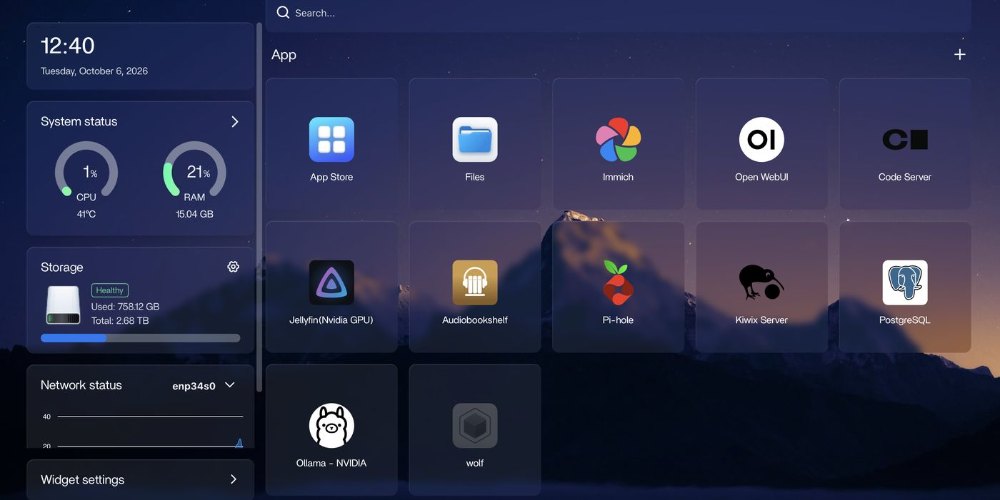
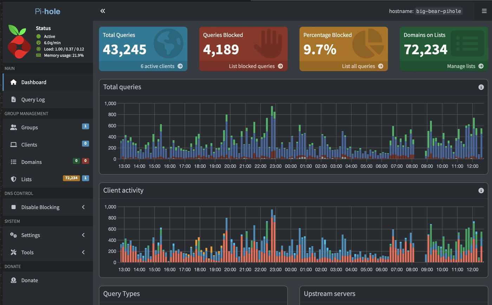
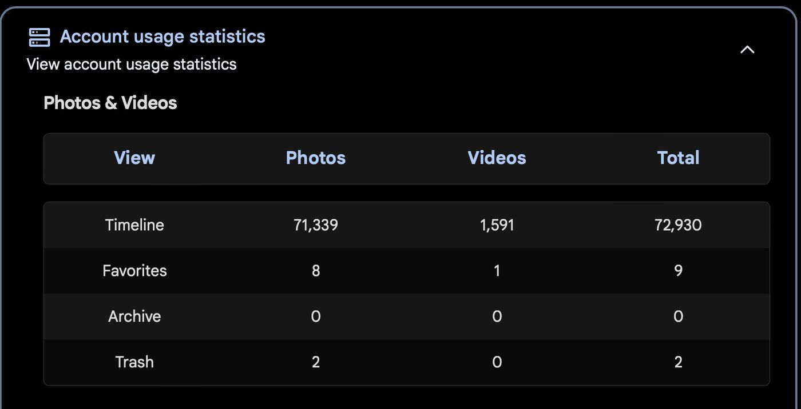
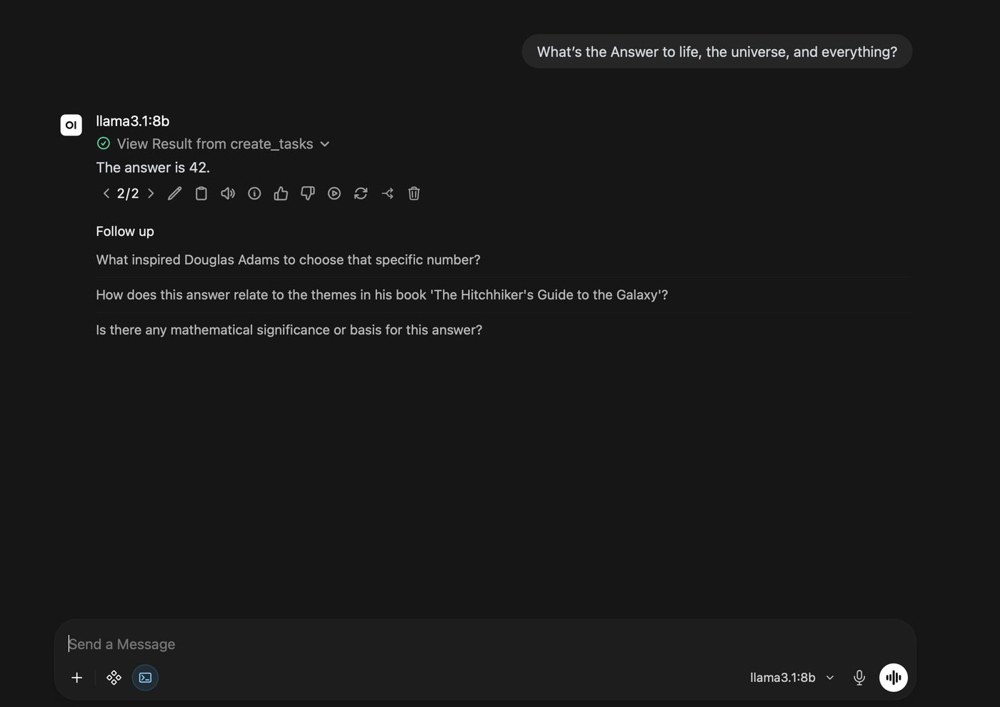

I built a PC for about $2,000 and then barely used it. I was always at work, at my girlfriend's place, or out doing something else, and between an iPhone, two Samsungs, a MacBook, a Mac mini, and a Lenovo IdeaPad, the desktop just collected dust. I wanted the power of that computer in the palm of my hand, wherever I was. That's when I found out homelabbing was a thing.
In April 2026 I dug through the old drives, moved everything I needed into Google Drive, formatted the machine, and installed Ubuntu Server. Linux wasn't new to me: almost every CS course I took at Waterloo had us SSH into the school's machines. Seeing PewDiePie go all-in on self-hosting is what convinced me it was worth sticking with after the first install.
Every device reaches the server through Tailscale, at home or away. The server sits next to the modem on ethernet.
Immich was bulk-uploading my photo library when every device on my Tailscale network suddenly lost the server. Pi-hole runs through Tailscale too, so at first I couldn't tell what had actually broken. When I got home I powered it back on and resumed the upload. It crashed again at about the 3-minute mark.
CPU temperature in CasaOS, then GPU and hard drive temperatures from the terminal. The CPU was pinned at 100% while the GPU sat at 0%. I also checked the power supply and power delivery, and even tried running it in a colder room.
New thermal paste on the CPU. Then an extra case fan. Neither stopped the crashes.
Immich's machine-learning jobs were running entirely on the CPU because NVIDIA GPU support wasn't set up for its containers. The CPU hit 100%, overheated, and the motherboard did an emergency shutdown. Once I enabled GPU acceleration so the 1660 Ti handled the ML work, it ran perfectly. The paste and the fan were treating the symptom; the 0% GPU reading was the real clue.
For a while I also had Uptime Kuma text me if the server went down. I removed it once I realized it was redundant: Tailscale is on everything I own, so I notice right away.
I used immich-go to import my photos in bulk, and it kept throwing errors. Dry runs weren't behaving as intended either: when I told it to import images only, videos still showed up in the results.
I always ran a dry run first, which is how I caught the videos slipping through before anything was imported. Then I went to the immich-go GitHub repo and checked which Immich versions each release was compatible with. My immich-go version didn't match my Immich version, and the newer build had a fix for exactly the bug I was hitting.
Updated immich-go to the matching build, and used sudo to get past the permission errors on an old NTFS backup drive. The migration is done: 72,930 photos and videos, from when I was born to now. It was a heavy job for both the CPU and GPU, but everything made it.
The server started out in the basement on WiFi, because running a cable down there wasn't an option.
I realized the server is headless. It has no screen and doesn't need to live anywhere in particular, so I moved it upstairs next to the modem and connected it with a 5 ft Cat6 cable. Ethernet is now the main connection, with WiFi kept as a backup. I tested it by unplugging the cable, and it stayed reachable.



